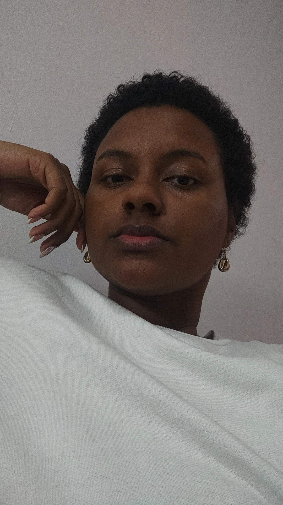

Ola, sou Vitoria Camilly de Sao Paulo, Zona Oeste. Atualmente estudante Desenvolvedora FullStack com foco em Java. Meu amor é na arte, sou artista visual e futuramente tambem terei minha loja. Alem de amar arte, design de interiores tambem é um facinio, arquitetura pra mim é hipnotizante. Hoje, estudante da Generation Brasil. Para mais informacoes acesse meu portifolio e minhas redes sociais.
Sobre Vitoria Camilly
